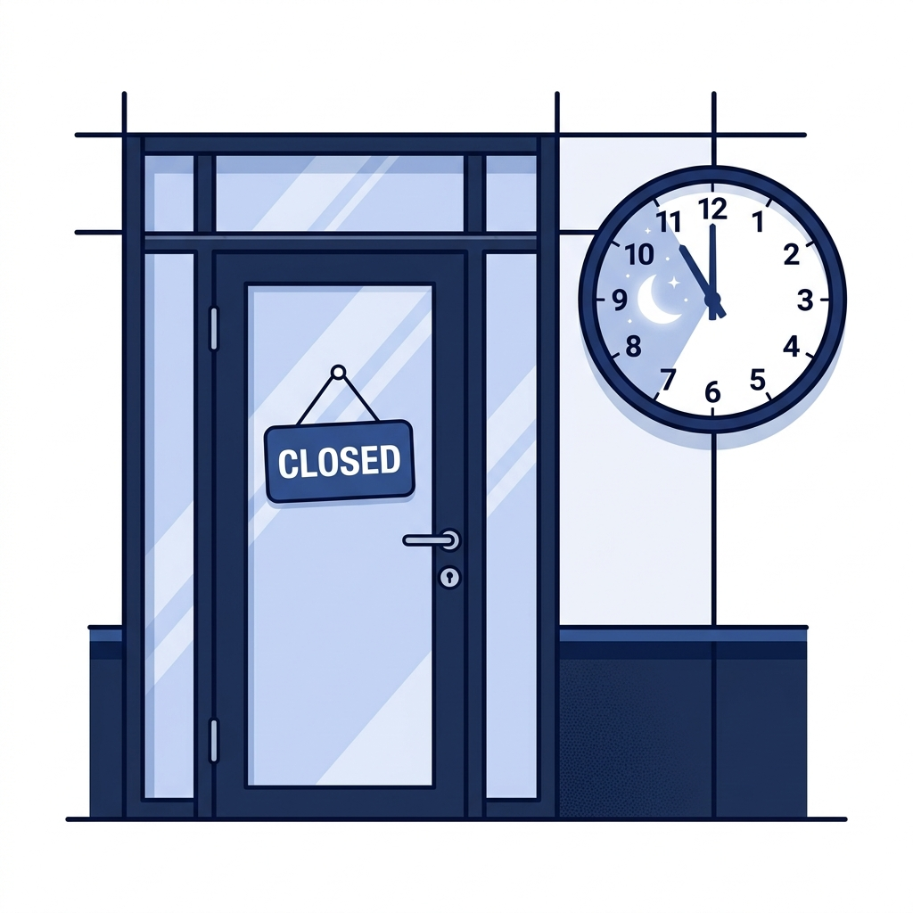
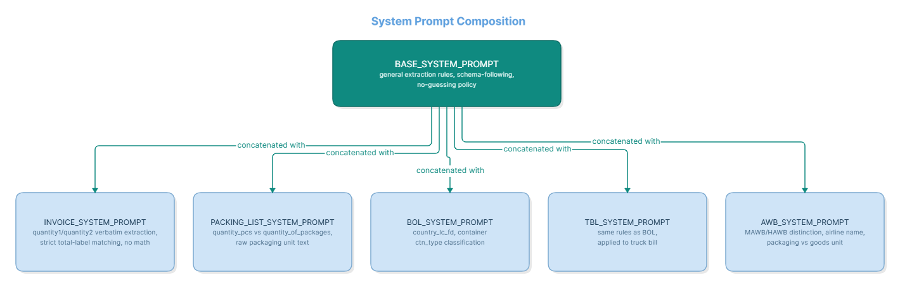
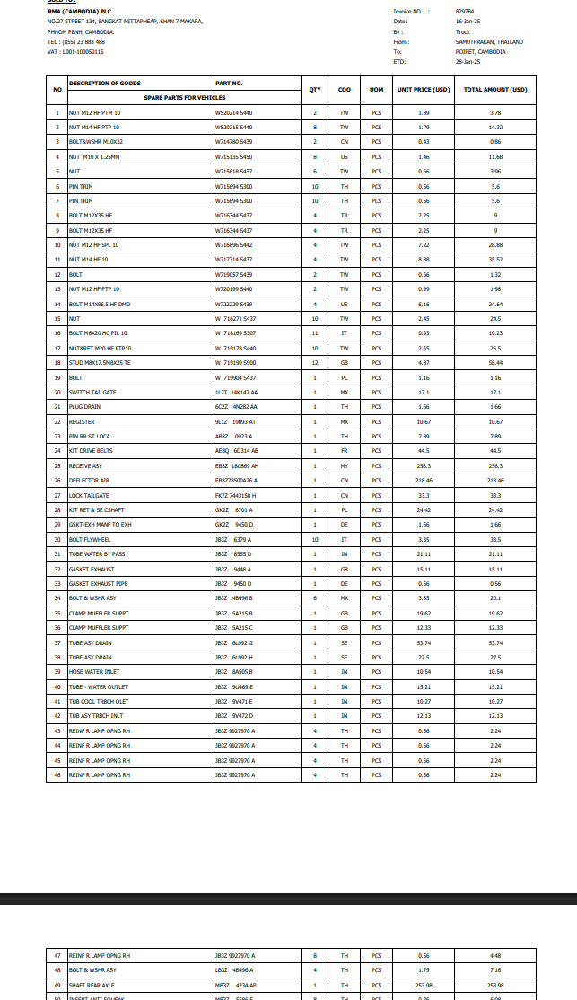
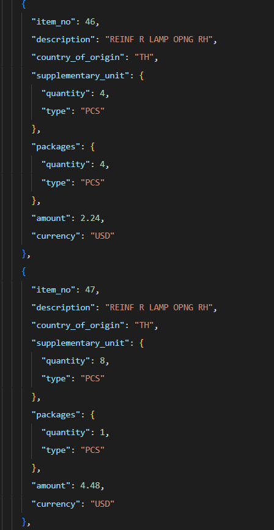
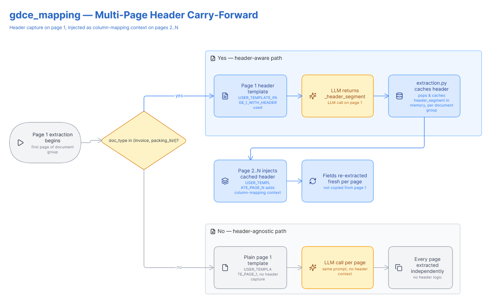
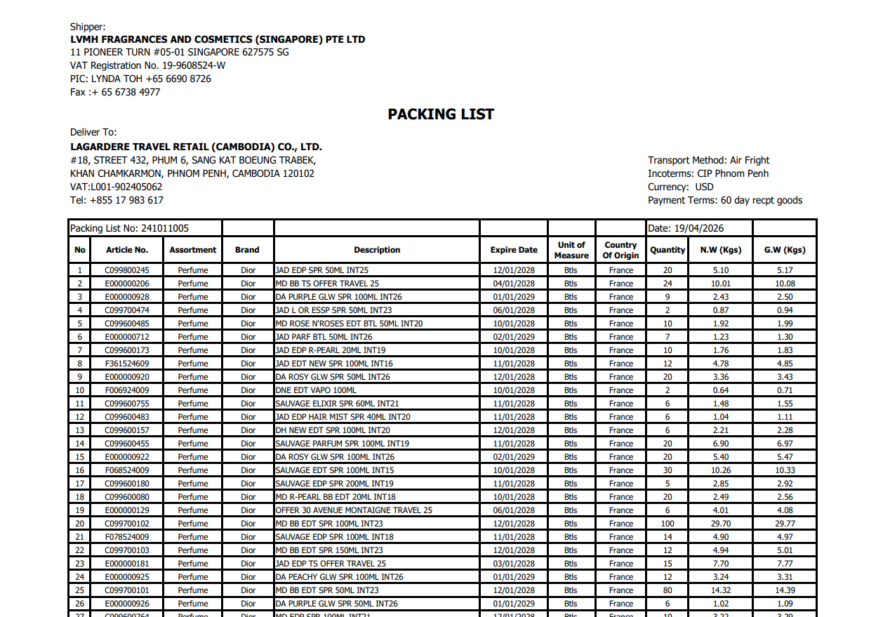
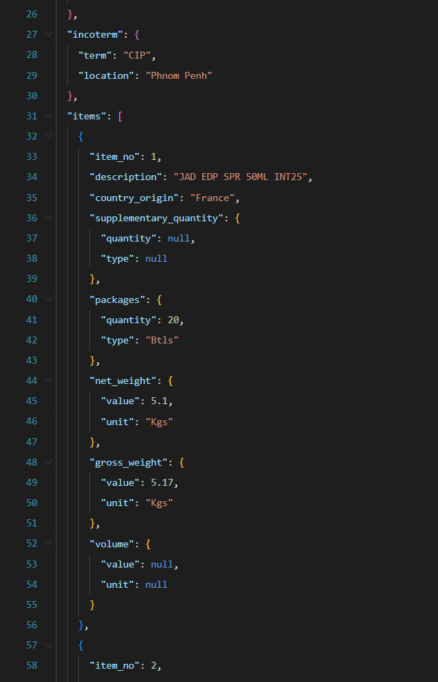
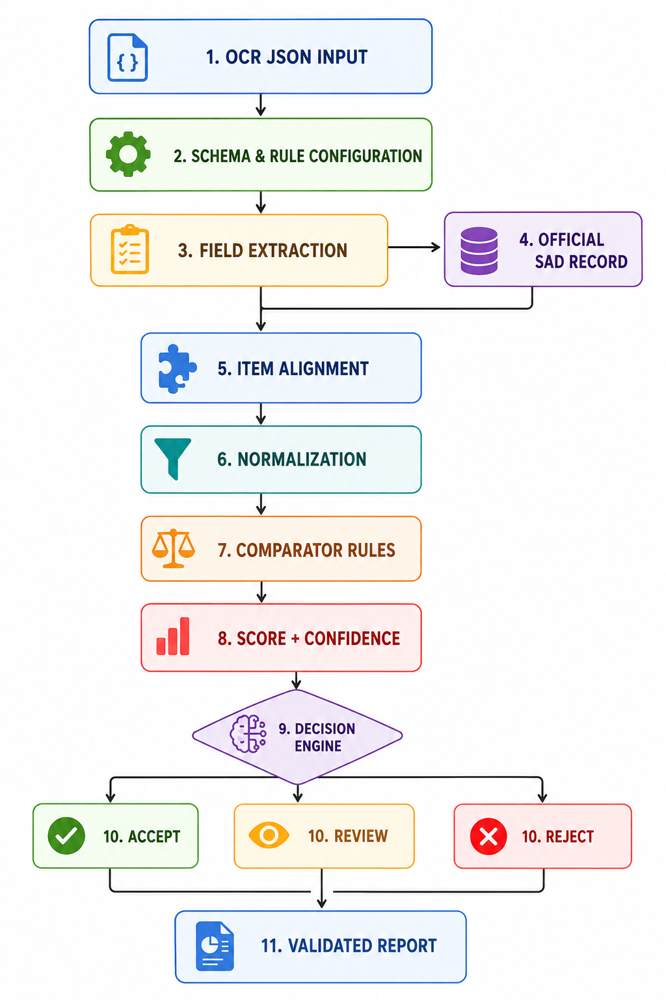
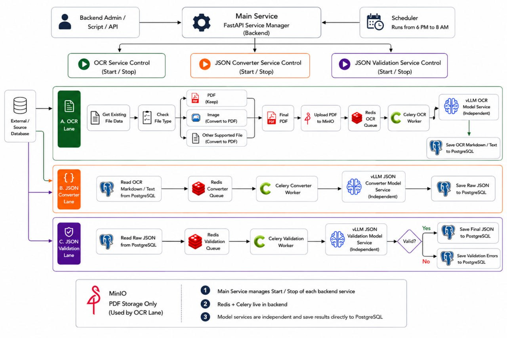
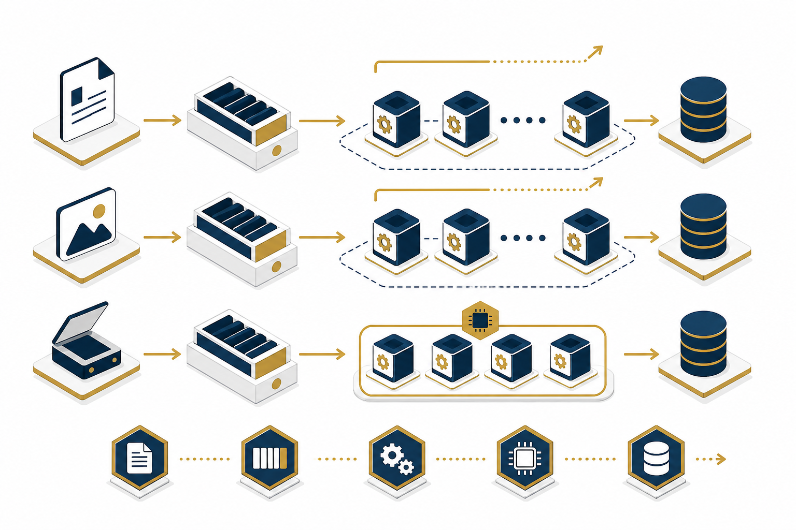

01
Define objective
- Multi-source intake
- Async stages
- Retry-safe state
RAG Retrieval · Intent Routing · Coversation Handling · Context Awareness
General Department of Customs and Excise of Cambodia
Technical Presentation · Senior Development Team · August 2026
Why public inquiries overwhelm customs customer services
An AI-powered multilingual (Khmer/English) customs chatbot for the GDCE (General Department of Customs and Excise).

Build a complete AI-powered customs chatbot that autonomously "help " in handling customs questions, calculates import duties and taxes, retrieves trade statistics, and surfaces legal procedures all grounded in official GDCE documents, available in both Khmer and English, 24/7.
Why gemini is more preferable than others
Why do we need these layers
The 7 stags of process flow
Starts the request, assigns a tracking ID, and locks the session and verify cache hit.
Corrects typos, checks safety, and rejects off-topic queries early.
Identifies the user's goal, selects Khmer/English, and asks for clarification if vague.
Merges the current question with chat history.
Dispatches the polished query to the best-suited backend service.
Fetches regulations (RAG), looks up tariffs, trade statistic or computes tax duties.
Streams the answer live to the screen, then saves the conversation to the database.
Live queries, grounded vs. hallucinated answers
Execution sequence of the Unified Sequential Slot-Collection Gate inside the Calculator handler resolving missing slots dynamically.
"hs code of iphone?"
hs_code_lookup, entity="iphone"last_entity="iphone"["8517.13.00"] saved to RedisReturns matching HS candidate list
"calculate its import tax"
"its" → "iphone"hs_code unconfirmed, cif_value missingpending_clarification=True"Ask user to confirm one of the following HS code options, and the price user spend"
"8517.13.00"
hs_code="8517.13.00"hs_code OK, cif_value still MISSING"What is the price that user paid"
"$1000"
cif_value=1000SSE streams iphone's tax breakdown
Session context automatically fills in prior slots, enabling query re-writing to merge multi-turn conversational deltas.
"Show me Cambodia rice exports in 2024"
trade_queryproduct="rice", direction="export", year="2023"Returns interactive trade chart
"What about 2025?"
product="rice", direction="export" from sessionyear="2024"Returns updated chart for 2024 exports
"And for Vietnam?"
partner_country="Vietnam" onto existing rice / export / 2024 contextReturns updated trade related to Cambodia–Vietnam rice exports
Search queries are progressively narrowed down by using only the delta, while the session automatically maintains the product context.
"what is the hs code for rice?"
hs_code_lookup, entity="rice":6333 (gdce_hs_code)Returns Chapter 10 candidates: 1006.10, 1006.20, 1006.30, 1006.40
"what about broken rice specifically?"
rice context1006.40.00last_entity="broken rice", candidate_codes=["1006.40.00"]Returns narrowed candidate: 1006.40.00 (broken rice)
"is there a more specific subheading under that?"
"that" → "1006.40.00 broken rice"1006.40Returns 1006.40.10 (feed) & 1006.40.90 (other) with duty rates
Conversational QA resolving domain-specific inquiries with topic narrowing and grounded answers with legal citations.
"what documents do I need to import goods into Cambodia?"
general:6334 (gdce_docs)Returns required document list with citations to Customs Law
"what about for agricultural products specifically?"
"importing into Cambodia"Returns updated procedure list with agricultural regulation citations
"does this apply to rice too?"
"this" → "agricultural import procedures"Returns answers referencing the specific Prakas on Agricultural Imports


Without header context, subsequent pages struggle.

Carrying header forward enables seamless multi-page interpretation.

Dynamic instruction to retain headers.

Raw docs often have ambiguous unit measures.

Models frequently hallucinate or misuse raw unit formats.
Maps raw extraction strictly into standard UNECE taxonomy.
Deterministic checks compute sums exactly.
Real-time processing

Automated triage classifies each document based on deterministic validation rules, configuration thresholds, and computed confidence.
| Decision | Validation State | Automated Action | Operational Impact |
|---|---|---|---|
| ✔ ACCEPT | All key fields and item values remain within configured tolerances | Pass validation automatically | Fast clearance with no manual intervention |
| ⚠ REVIEW | Minor mismatch or ambiguous value requiring human confirmation | Highlight variances for customs officer review | Focused inspection on the exact flagged fields |
| ✖ REJECT | Critical mismatch, missing data, or severe data-quality issue | Stop processing and record reasoned rationale | Revenue protection and stronger control over false declarations |
Validation is not subjective. It is evidence-based comparison against official customs truth, scored and classified with clear thresholds.
DB entry is what was declared, not what's on the document — hard to tell typos from real errors
FOB vs. DAP are both valid; system can't tell a legitimate restatement apart from a mistake
Totals change by incoterm (FOB ≠ DAP); comparing across different terms is invalid
Some DB items use formulas (e.g., "3-8", "6+9") — OCR errors break the lookup
End-to-end validation in action — OCR output compared against the official customs record in real time.
Key findings, limitations, and sovereign AI conclusion
dots.mocr is the only model meeting 90+ accuracy across all 5 document types, with high-fidelity Khmer, English, French extraction on real customs documents.
Resolution tuning delivers a 4-5x speed improvement with accuracy maintained; PagedAttention enables concurrent high-resolution processing without OOM.
Deterministic normalization + careful model selection beats naive model scaling. Validation reduced false-positive mismatches; preprocessing quality drives accuracy.
unk for manual review
Established rigorous benchmark methodology, proving IDP feasibility and high extraction fidelity for Cambodian customs declaration workflows.
Identified RedNote Lab's dots.mocr (3B VLM) as the top vision model, outperforming other baselines on dense layouts, stamps, & Khmer tables.
Selected Qwen3-4B-Instruct-FP8 (Text-only) for schema JSON mapping, served via vLLM PagedAttention for high concurrency.
Developed an auditable multi-stage validation engine (normalization, item alignment, fuzzy thresholds) guaranteeing zero false positives.
Engineered dynamic resolution scaling, achieving a 4–5× speed acceleration for high-resolution images with 100% accuracy retention.
Tailored architecture for GDCE's sovereign HP Z4 Rack G5 (RTX Pro 4500 32GB), ensuring complete data privacy & overnight batch execution.
The research identifies the optimal model & serving stack for GDCE: high extraction accuracy, auditable validation, and sovereign on-premise AI.
PRODUCTION READY · GDCE 2026Orchestration, data collection, service management, and deployment
API Layer
REST API, health / ready, orchestration

Database
Jobs, documents, outputs, events, audit

Object Storage
S3 store for PDFs and converted files
Scheduler
Lane polling and nightly batch window


Task Queue
3 stage queues with retries and isolation

Converter
Word / Excel to PDF conversion

Testing
Unit and integration test coverage

Container Runtime
On-prem deploy on ocr-network


Questions?
Intelligent Document Processing System · General Department of Customs and Excise of Cambodia